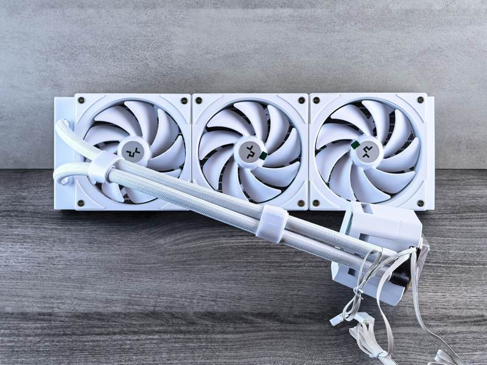

Introduction to Fast PC Repair Services
In today's fast-paced digital world, having a reliable and efficient PC is crucial. Whether for work, study, or entertainment, encountering technical issues can be frustrating. Fortunately, Edmonton offers a range of fast PC repair services that can help you get back on track in no time.

Why Choose Professional PC Repair?
Opting for professional PC repair services ensures that your computer is in the hands of experts who understand the intricacies of different hardware and software issues. These professionals can diagnose problems quickly and provide effective solutions, saving you time and avoiding potential damage.
Moreover, professional repair services often come with a warranty, giving you peace of mind. With their vast experience, they can also offer valuable advice on maintaining your PC to prevent future issues.
Common PC Issues and Solutions
PCs can encounter a variety of problems that can disrupt your productivity. Here are some of the most common issues and their solutions:
- Slow Performance: Often caused by insufficient RAM or a cluttered hard drive. Upgrading hardware or cleaning up software can help.
- Virus and Malware: Installing reliable antivirus software and performing regular scans can protect your system.
- Hardware Failures: Professional technicians can diagnose and replace faulty components like hard drives or power supplies.

What to Expect from a PC Repair Service
When you take your PC for repair, expect an initial assessment to identify the problem. The technician will then provide you with a detailed report and a quote for the repair. Depending on the issue, repairs can be done on the spot or may require a few days.
Some services offer remote support for software-related issues, which can be a convenient option for minor problems. Additionally, many repair shops offer pickup and delivery services, adding to the convenience.
Choosing the Right Repair Service
With numerous options available in Edmonton, selecting the right PC repair service can be daunting. Here are some tips to help you make an informed decision:
- Check Reviews: Look for services with positive customer feedback.
- Compare Prices: Get quotes from different providers to find competitive rates.
- Ask About Experience: Choose technicians with a proven track record in handling similar issues.

DIY vs. Professional Repair
While some minor issues can be resolved with DIY methods, such as running system updates or using built-in troubleshooting tools, more complex problems require professional attention. Attempting to fix serious hardware issues without the right expertise can lead to further damage.
Professional repair services provide not only expertise but also access to advanced tools and parts that might not be readily available to the average user.
Conclusion
Fast PC repair services in Edmonton are essential for anyone who relies heavily on their computer. With professional help, you can ensure that your PC remains in top condition, allowing you to focus on what truly matters. Whether you’re facing slow performance, hardware malfunctions, or software issues, expert technicians are ready to assist you.